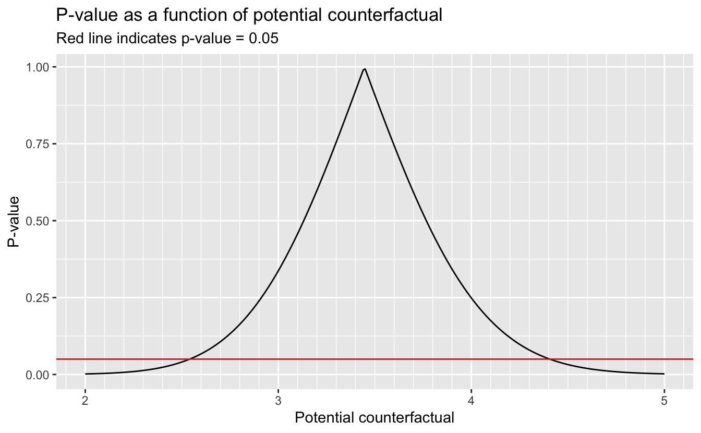

14 G-estimation and structural nested models
# Packages
library(tidyverse)
# Parameters
# NHEFS data
file_nhefs <- here::here("data/nhefs.rds")
# Round and format vector
round_format <- function(x, nsmall = 2, ...) {
format(round(x, digits = nsmall), nsmall = nsmall, ...)
}
# Print tibble
kable <- function(x, cols = where(is.double), nsmall = 2, align = "r", ...) {
x %>%
mutate(across({{cols}}, round_format, nsmall = nsmall)) %>%
knitr::kable(align = align, ...) %>%
kableExtra::kable_styling(full_width = FALSE, position = "left")
}
# Print min, mean, and max of vector
kable_summary <- function(x, nsmall = 2, ...) {
tibble(min = min(x), mean = mean(x), max = max(x)) %>%
kable(nsmall = nsmall, ...)
}
#===============================================================================
# NHEFS data
nhefs <- read_rds(file_nhefs)
# NHEFS censored for those with weight measurements in 1982
nhefs_censored <-
nhefs %>%
drop_na(wt82, wt82_71)14.1 The causal question revisited
Number of people in censored dataset.
nrow(nhefs_censored)#> [1] 1566Range of ages.
range(nhefs_censored$age)#> [1] 25 7414.4 Rank preservation
Individuals ranked first, second, and last in weight gain.
nhefs_censored %>%
select(seqn, wt82_71) %>%
arrange(desc(wt82_71)) %>%
slice(1:2, n()) %>%
kable(nsmall = 1)| seqn | wt82_71 |
|---|---|
| 23522 | 48.5 |
| 6928 | 47.5 |
| 23321 | -41.3 |
14.5 G-estimation
Add censored variable to nhefs to indicate whether or not weight in 1982 (wt82) is missing.
nhefs <-
nhefs %>%
mutate(censored = if_else(!is.na(wt82), 0, 1) %>% as.factor())Non-stabilized IP weights for censoring.
fit <-
glm(
censored ~ qsmk + sex + poly(age, 2) + race + education + poly(wt71, 2) +
poly(smokeintensity, 2) + poly(smokeyrs, 2) + active + exercise,
family = binomial(),
data = nhefs
)
ip_w_c <-
case_when(
nhefs$censored == "0" ~ 1 / (1 - predict(fit, type = "response")),
nhefs$censored == "1" ~ 1 / predict(fit, type = "response"),
TRUE ~ NA_real_
) %>%
keep(nhefs$censored == "0")
kable_summary(ip_w_c)| min | mean | max |
|---|---|---|
| 1.00 | 1.04 | 1.82 |
For potential counterfactual (psi), calculate logistic regression coefficient (alpha) and its p-value (p_value).
g_est <- function(psi) {
geepack::geeglm(
qsmk ~ sex + poly(age, 2) + race + education + poly(wt71, 2) +
poly(smokeintensity, 2) + poly(smokeyrs, 2) + active + exercise + h,
family = binomial(),
data =
nhefs_censored %>%
mutate(
qsmk = as.double(qsmk) - 1,
h = wt82_71 - psi * qsmk
),
weights = ip_w_c,
id = seqn
) %>%
broom::tidy() %>%
filter(term == "h") %>%
transmute(psi, alpha = estimate, p_value = p.value)
}Calculate alpha for potential counterfactuals between 2.0 and 5.0 in increments of 0.1.
v <-
seq(2, 5, 0.1) %>%
map_dfr(g_est)
v#> # A tibble: 31 × 3
#> psi alpha p_value
#> <dbl> <dbl> <dbl>
#> 1 2 0.0267 0.00177
#> 2 2.1 0.0249 0.00358
#> 3 2.2 0.0231 0.00696
#> 4 2.3 0.0212 0.0130
#> 5 2.4 0.0194 0.0234
#> 6 2.5 0.0176 0.0404
#> 7 2.6 0.0157 0.0670
#> 8 2.7 0.0139 0.107
#> 9 2.8 0.0120 0.163
#> 10 2.9 0.0102 0.239
#> # … with 21 more rows
#> # ℹ Use `print(n = ...)` to see more rowsThe two values of psi with alpha values closest to 0.
v %>%
select(psi, alpha) %>%
slice_min(n = 2, abs(alpha)) %>%
knitr::kable(digits = 3) %>%
kableExtra::kable_styling(full_width = FALSE, position = "left")| psi | alpha |
|---|---|
| 3.4 | 0.001 |
| 3.5 | -0.001 |
Estimate of ATE with 95% confidence interval.
v %>%
summarize(
estimate = min(psi[abs(alpha) == min(abs(alpha))]),
conf_low = max(psi[psi < estimate & p_value < 0.05]),
conf_high = min(psi[psi > estimate & p_value < 0.05])
) %>%
kable(nsmall = 1)| estimate | conf_low | conf_high |
|---|---|---|
| 3.4 | 2.5 | 4.5 |
P-value as a function of potential counterfactual.
v <-
seq(2, 5, 0.01) %>%
map_dfr(g_est)
v %>%
ggplot(aes(psi, p_value)) +
geom_line() +
geom_hline(yintercept = 0.05, color = "red") +
scale_x_continuous(minor_breaks = scales::breaks_width(0.1)) +
labs(
title = "P-value as a function of potential counterfactual",
subtitle = "Red line indicates p-value = 0.05",
x = "Potential counterfactual",
y = "P-value"
)
For a better estimate of the ATE, use optimization to search for the value of psi with alpha value closest to 0.
f <- function(psi) {
abs(g_est(psi)$alpha)
}
v <- optimize(f, interval = c(3.4, 3.5))
estimate <- v$minimum
tibble(estimate, `abs(alpha)` = v$objective) %>%
kable(nsmall = 3)| estimate | abs(alpha) |
|---|---|
| 3.446 | 0.000 |
For a better estimate of the lower bound of the 95% confidence interval, use optimization to search for the smaller value of psi with p-value value closest to 0.05.
f <- function(psi) {
abs(g_est(psi)$p_value - 0.05)
}
v <- optimize(f, interval = c(2.5, 2.6))
conf_low <- v$minimum
tibble(conf_low, `abs(p_value - 0.05)` = v$objective) %>%
kable(nsmall = 3)| conf_low | abs(p_value - 0.05) |
|---|---|
| 2.541 | 0.000 |
For a better estimate of the upper bound of the 95% confidence interval, use optimization to search for the larger value of psi with p-value value closest to 0.05.
v <- optimize(f, interval = c(4.4, 4.5))
conf_high <- v$minimum
tibble(conf_high, `abs(p_value - 0.05)` = v$objective) %>%
kable(nsmall = 3)| conf_high | abs(p_value - 0.05) |
|---|---|
| 4.406 | 0.000 |
Using the formula in Technical Point 14.2, we obtain a closed-form estimate of the ATE.
fit <-
glm(
qsmk ~ sex + poly(age, 2) + race + education + poly(wt71, 2) +
poly(smokeintensity, 2) + poly(smokeyrs, 2) + active + exercise,
family = binomial(),
data = nhefs_censored,
weights = ip_w_c
)
broom::tidy(fit)#> # A tibble: 19 × 5
#> term estimate std.error statistic p.value
#> <chr> <dbl> <dbl> <dbl> <dbl>
#> 1 (Intercept) -1.17 0.199 -5.85 0.00000000490
#> 2 sex1 -0.514 0.150 -3.42 0.000622
#> 3 poly(age, 2)1 22.1 4.77 4.64 0.00000348
#> 4 poly(age, 2)2 -4.51 3.05 -1.48 0.140
#> 5 race1 -0.861 0.206 -4.18 0.0000293
#> 6 education2 -0.0289 0.193 -0.150 0.881
#> 7 education3 0.0877 0.173 0.507 0.612
#> 8 education4 0.0664 0.266 0.249 0.803
#> 9 education5 0.471 0.221 2.13 0.0331
#> 10 poly(wt71, 2)1 3.43 2.59 1.33 0.185
#> # … with 9 more rows
#> # ℹ Use `print(n = ...)` to see more rowsv <-
nhefs_censored %>%
mutate(
qsmk = as.double(qsmk) - 1,
qsmk_pred = predict(fit, type = "response"),
) %>%
summarize(
estimate =
sum(ip_w_c * wt82_71 * (qsmk - qsmk_pred)) /
sum(ip_w_c * qsmk * (qsmk - qsmk_pred))
)
kable(v, nsmall = 3)| estimate |
|---|
| 3.446 |
14.6 Structural nested models with two or more parameters
The estimate for the ATE if we assume that it depends upon the baseline level of smoking intensity (smokeintensity).
v <-
nhefs_censored %>%
mutate(
qsmk = as.double(qsmk) - 1,
qsmk_pred = predict(fit, type = "response"),
a_1 = ip_w_c * qsmk * (qsmk - qsmk_pred),
a_2 = a_1 * smokeintensity,
a_3 = a_1 * smokeintensity^2,
b_1 = ip_w_c * wt82_71 * (qsmk - qsmk_pred),
b_2 = b_1 * smokeintensity
) %>%
summarize(across(starts_with(c("a_", "b_")), sum))
a <- matrix(c(v$a_1, v$a_2, v$a_2, v$a_3), nrow = 2)
b <- matrix(c(v$b_1, v$b_2), nrow = 2)
v <- solve(a, b)
tibble(psi_1 = v[1, 1], psi_2 = v[2, 1]) %>%
kable()| psi_1 | psi_2 |
|---|---|
| 2.86 | 0.03 |